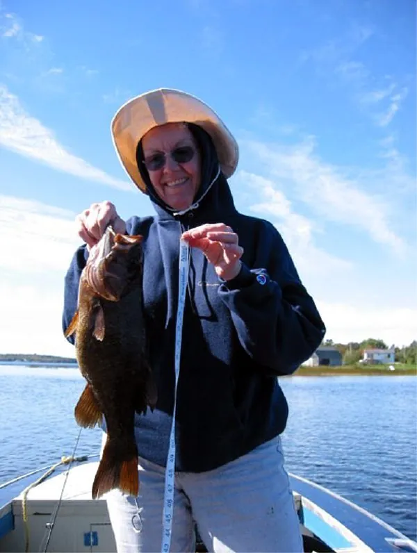
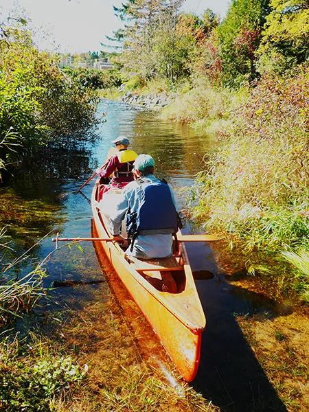
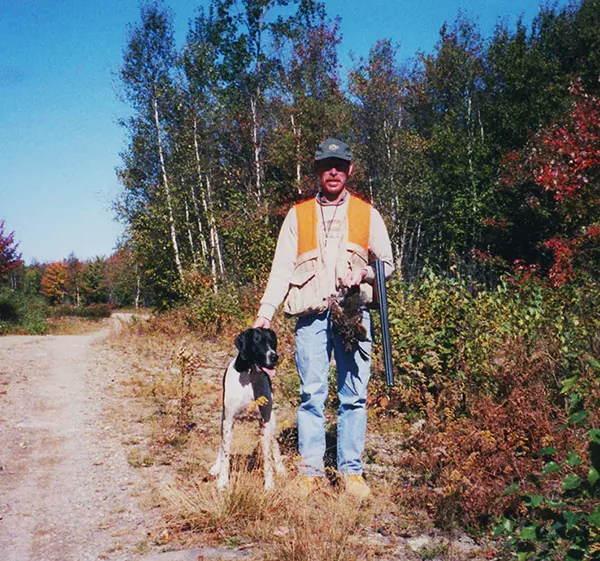

Bass, salmon, canoes and grouse cover
Princeton has access to an enormous assortment of lakes. The inn’s guests come to paddle the St. Croix, fish, hunt birds, ride ATV trails and hike.
About fishing here
The public landing puts you into Lewey Lake, the Grand Falls Flowage and the St. Croix River. From Lewey Lake you can enter Long Lake, which flows from Big Lake. West Grand and Musquash hold togue (a 20 lb. fish was caught in 2023). Pickerel and white perch are in all the lakes, and native brook trout in the streams of the Downeast Lakes Community Forest. The primary fishery is bass.
Smallmouth bass
Considered some of the best smallmouth fishing in the Northeast. From mid-May to the end of June it is possible to catch and release 100 bass in a day. Summer is slower, but that is when to catch the lunkers. In September the bass feed again as the water cools.
Largemouth bass
Crawford and Pocomoonshine Lakes have largemouth that average 3 to 8 pounds.
Landlocked salmon
Grand Lake Stream has legendary river fishing for landlocked salmon, in the 2–3 pound range from mid-May through June. Fly fishing only there; regular gear works at the narrows between Long Lake and Lewey Lake.
- Big Lake17,000 acres
- West Grand Lake14,000 acres
- Meddybemps Lake6,700 acres
- Grand Falls Flowage6,600 acres
- Pocomoonshine Lake2,400 acres
- Crawford Lake1,600 acres
- Musquash Lake1,600 acres
- Clifford Lake900 acres
- Long Lake600 acres


Paddling
The St. Croix, Machias and Penobscot watersheds offer single or multi-day canoe and kayak trips. Groups often stay the night, have dinner and breakfast, and launch on the St. Croix in the morning.
Hiking and ATV
Thousands of acres of conservation land have public access. The Downeast Lakes Land Trust Community Forest nearby is for foot traffic only. Local ATV trails have designated routes and connect to the county and state systems. Hike the Bold Coast, or hike, bike and ride the Downeast Sunrise Trail.
Geocaching
The Downeast Lakes Land Trust Geocache Challenge is a passport of 27 sites to find.
Upland birds and waterfowl
The St. Croix watershed lies on the Atlantic Flyway, with a wide variety of waterfowl. Outdoor writers have singled out the region as “Maine’s finest cover for upland bird hunting”, with native ruffed grouse and American woodcock, plus woodcock that fly in.
Hunt guided or unguided, with your guide’s bird dog or your own. If you have not been here before, the inn recommends a guide and will set one up for you.

Day trips
Distances from the inn, as the inn gives them. Bring your passport for the Canada side.
- In Princeton. Passamaquoddy Tribal Museum
- 14 miles. Grand Lake Stream museum and fish hatchery
- 18 miles. Moosehorn Wildlife Refuge: bald eagle nesting sites and 50 miles of road and trails
- 22 miles. Calais: restaurants, supermarkets, antique shops, a movie theater
- 23 miles. St. Stephen, Canada: Ganong Chocolate Factory and Museum, and the Charlotte County Museum in Milltown
- 45 miles. Eastport: whale watching, Raye’s Mustard, art galleries and shore-side dining
- 50 miles. St. Andrews, Canada: the Marine Science Centre Aquarium, an arts and nature centre, shops, galleries and restaurants
- Further. St. Croix Island International Historic Site, Quoddy Head State Park and West Quoddy Light, Lubec, and the Roosevelt Homestead on Campobello Island